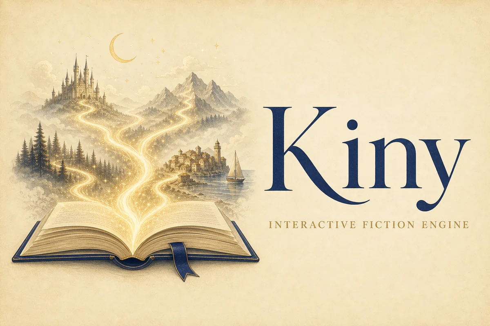
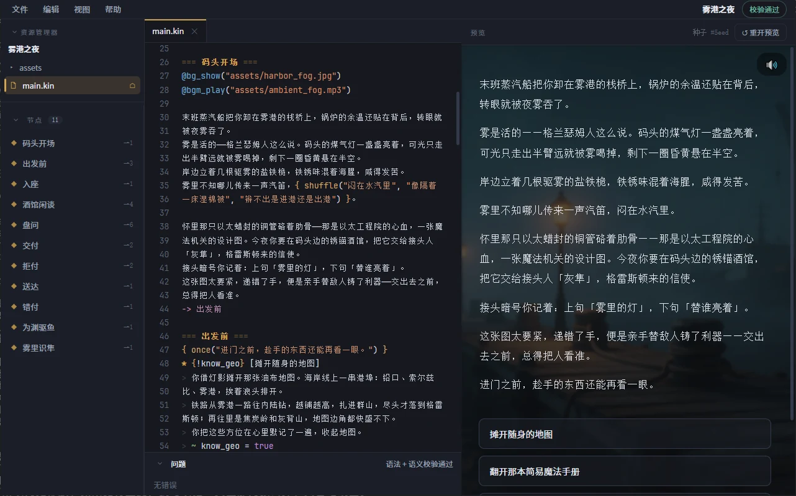
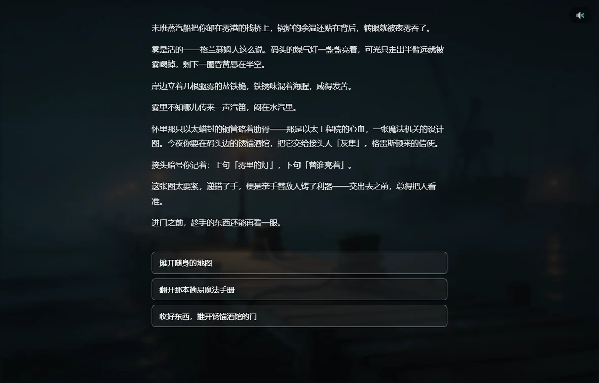

Kiny 是一种写互动小说的标记语言，配套引擎、阅读器和编辑器。故事是 .kin 纯文本文件，用选项和条件写出分支，读者的选择决定走向。对中文友好，跨平台。

一个用 Kiny 写成的完整短篇，可以在浏览器里直接读。
「末班蒸汽船把你卸在雾港的栈桥上，转眼就被夜雾吞了。」
Kiny 把故事的文本、选项与状态写在同一份 .kin 文件里，并提供配套的编辑器即写即预览。

桌面编辑器 · 左侧资源树、中间编辑、右侧实时预览，底部即时语法与语义校验。
用选项让读者做决定，不同选择通向不同的内容与结局。
记录读者经历过什么，据此显示或隐藏内容、改变后续走向。
故事是 .kin 文本文件，可用任意编辑器编写，适合版本管理。
支持中文标点与中文标识符；浏览器、Windows、macOS 通用。
源码，对照它跑给读者看的样子。
=== 出发前 === * {!know_geo} [摊开随身的地图] > 你借灯影摊开那张油布地图。 > 海岸线上一串港埠…… > ~ know_geo = true > -> 出发前 * [收好东西，推开锈锚酒馆的门] -> 入座
在码头多停留片刻。要不要先理清这座雾城的地理，再推门进酒馆？
{!know_geo} 让「看地图」只在没看过时出现；~ know_geo = true 记下状态，-> 出发前 折返后该选项消失，-> 入座 进入下一章。
同一份 .kin 故事，在下面这些工具里运行。

桌面阅读器 · 沉浸阅读《雾港之夜》，正文与选项随场景呈现。
读 .kin、跑故事的核心：解析、静态检查、运行时与终端播放器。
浏览器里的阅读器，可构建成静态站点部署（本站示例即由它驱动）。
基于 Tauri 2 的桌面端阅读器，用于离线阅读。
在移动设备上阅读，随时随地继续未完的故事。
基于 Tauri 2 的桌面端编辑器，写 .kin 并即时预览。
在手机或平板上随手编写与修改 .kin 故事。
以下能力正在规划中。